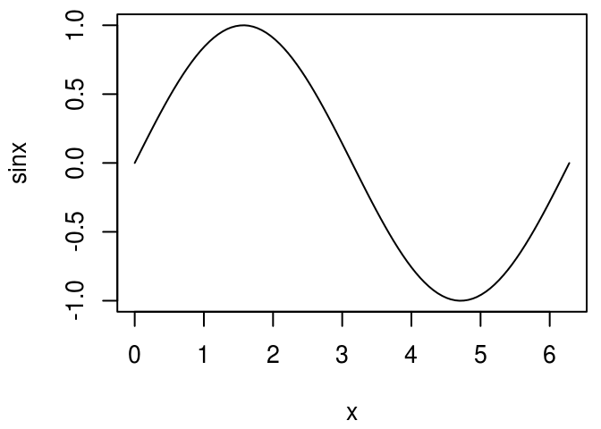

Non-standard evaluation
“Flexibility in syntax, if it does not lead to ambiguity, would seem a reasonable thing to ask of an interactive programming language.”
— Kent Pitman
R has powerful tools for computing not only on values, but also on the actions that lead to those values. If you’re coming from another programming language, they are one of the most surprising features of R. Consider the following simple snippet of code that plots a sine curve:
x <- seq(0, 2 * pi, length = 100)
sinx <- sin(x)
plot(x, sinx, type = "l")
Look at the labels on the axes. How did R know that the variable on the x axis is called x and the variable on the y axis is called sinx? In most programming languages, you can only access the values of a function’s arguments. In R, you can also access the code used to compute them. This makes it possible to evaluate code in non-standard ways: to use what is known as non-standard evaluation, or NSE for short. NSE is particularly useful for functions when doing interactive data analysis because it can dramatically reduce the amount of typing.
Outline
Capturing expressions teaches you how to capture unevaluated expressions using
substitute().Non-standard evaluation shows you
subset()works with combiningsubstitute()witheval()to allow you to succinctly select rows from a data frame.Scoping issues discusses scoping issues specific to NSE, and will show you how to resolve them.
Calling from another function shows why every function that uses NSE should have an escape hatch, a version that uses regular evaluation.
Substitute teaches you how to use
substitute()to work with functions that don’t have an escape hatch.The downsides finishes off the chapter with a discussion of the downsides of NSE.
Prerequisites
Before reading this chapter, make sure you’re familiar with environments (Environments) and lexical scoping (Lexical scoping). You’ll also need to install the pryr package with install.packages("pryr"). Some exercises require the plyr package, which you can install from CRAN with install.packages("plyr").
Capturing expressions
substitute() makes non-standard evaluation possible. It looks at a function argument and instead of seeing the value, it sees the code used to compute the value:
f <- function(x) {
substitute(x)
}
f(1:10)
#> 1:10
x <- 10
f(x)
#> x
y <- 13
f(x + y^2)
#> x + y^2For now, we won’t worry about exactly what substitute() returns (that’s the topic of the following chapter), but we’ll call it an expression.
substitute() works because function arguments are represented by a special type of object called a promise. A promise captures the expression needed to compute the value and the environment in which to compute it. You’re not normally aware of promises because the first time you access a promise its code is evaluated in its environment, yielding a value.
substitute() is often paired with deparse(). That function takes the result of substitute(), an expression, and turns it into a character vector.
g <- function(x) deparse(substitute(x))
g(1:10)
#> [1] "1:10"
g(x)
#> [1] "x"
g(x + y^2)
#> [1] "x + y^2"There are a lot of functions in Base R that use these ideas. Some use them to avoid quotes:
library(ggplot2)
# the same as
library("ggplot2")Other functions, like plot.default(), use them to provide default labels. data.frame() labels variables with the expression used to compute them:
x <- 1:4
y <- letters[1:4]
names(data.frame(x, y))
#> [1] "x" "y"We’ll learn about the ideas that underlie all these examples by looking at one particularly useful application of NSE: subset().
Exercises
One important feature of
deparse()to be aware of when programming is that it can return multiple strings if the input is too long. For example, the following call produces a vector of length two:g(a + b + c + d + e + f + g + h + i + j + k + l + m + n + o + p + q + r + s + t + u + v + w + x + y + z)Why does this happen? Carefully read the documentation. Can you write a wrapper around
deparse()so that it always returns a single string?Why does
as.Date.default()usesubstitute()anddeparse()? Why doespairwise.t.test()use them? Read the source code.pairwise.t.test()assumes thatdeparse()always returns a length one character vector. Can you construct an input that violates this expectation? What happens?f(), defined above, just callssubstitute(). Why can’t we use it to defineg()? In other words, what will the following code return? First make a prediction. Then run the code and think about the results.f <- function(x) substitute(x) g <- function(x) deparse(f(x)) g(1:10) g(x) g(x + y ^ 2 / z + exp(a * sin(b)))
Non-standard evaluation in subset
While printing out the code supplied to an argument value can be useful, we can actually do more with the unevaluated code. Take subset(), for example. It’s a useful interactive shortcut for subsetting data frames: instead of repeating the name of data frame many times, you can save some typing:
sample_df <- data.frame(a = 1:5, b = 5:1, c = c(5, 3, 1, 4, 1))
subset(sample_df, a >= 4)
#> a b c
#> 4 4 2 4
#> 5 5 1 1
# equivalent to:
# sample_df[sample_df$a >= 4, ]
subset(sample_df, b == c)
#> a b c
#> 1 1 5 5
#> 5 5 1 1
# equivalent to:
# sample_df[sample_df$b == sample_df$c, ]subset() is special because it implements different scoping rules: the expressions a >= 4 or b == c are evaluated in the specified data frame rather than in the current or global environments. This is the essence of non-standard evaluation.
How does subset() work? We’ve already seen how to capture an argument’s expression rather than its result, so we just need to figure out how to evaluate that expression in the right context. Specifically, we want x to be interpreted as sample_df$x, not globalenv()$x. To do this, we need eval(). This function takes an expression and evaluates it in the specified environment.
Before we can explore eval(), we need one more useful function: quote(). It captures an unevaluated expression like substitute(), but doesn’t do any of the advanced transformations that can make substitute() confusing. quote() always returns its input as is:
quote(1:10)
#> 1:10
quote(x)
#> x
quote(x + y^2)
#> x + y^2We need quote() to experiment with eval() because eval()’s first argument is an expression. So if you only provide one argument, it will evaluate the expression in the current environment. This makes eval(quote(x)) exactly equivalent to x, regardless of what x is:
eval(quote(x <- 1))
eval(quote(x))
#> [1] 1
eval(quote(y))
#> Error in eval(expr, envir, enclos): object 'y' not foundquote() and eval() are opposites. In the example below, each eval() peels off one layer of quote()’s.
quote(2 + 2)
#> 2 + 2
eval(quote(2 + 2))
#> [1] 4
quote(quote(2 + 2))
#> quote(2 + 2)
eval(quote(quote(2 + 2)))
#> 2 + 2
eval(eval(quote(quote(2 + 2))))
#> [1] 4eval()’s second argument specifies the environment in which the code is executed:
x <- 10
eval(quote(x))
#> [1] 10
e <- new.env()
e$x <- 20
eval(quote(x), e)
#> [1] 20Because lists and data frames bind names to values in a similar way to environments, eval()’s second argument need not be limited to an environment: it can also be a list or a data frame.
eval(quote(x), list(x = 30))
#> [1] 30
eval(quote(x), data.frame(x = 40))
#> [1] 40This gives us one part of subset():
eval(quote(a >= 4), sample_df)
#> [1] FALSE FALSE FALSE TRUE TRUE
eval(quote(b == c), sample_df)
#> [1] TRUE FALSE FALSE FALSE TRUEA common mistake when using eval() is to forget to quote the first argument. Compare the results below:
a <- 10
eval(quote(a), sample_df)
#> [1] 1 2 3 4 5
eval(a, sample_df)
#> [1] 10
eval(quote(b), sample_df)
#> [1] 5 4 3 2 1
eval(b, sample_df)
#> Error in eval(b, sample_df): object 'b' not foundWe can use eval() and substitute() to write subset(). We first capture the call representing the condition, then we evaluate it in the context of the data frame and, finally, we use the result for subsetting:
subset2 <- function(x, condition) {
condition_call <- substitute(condition)
r <- eval(condition_call, x)
x[r, ]
}
subset2(sample_df, a >= 4)
#> a b c
#> 4 4 2 4
#> 5 5 1 1Exercises
Predict the results of the following lines of code:
eval(quote(eval(quote(eval(quote(2 + 2)))))) eval(eval(quote(eval(quote(eval(quote(2 + 2))))))) quote(eval(quote(eval(quote(eval(quote(2 + 2)))))))subset2()has a bug if you use it with a single column data frame. What should the following code return? How can you modifysubset2()so it returns the correct type of object?sample_df2 <- data.frame(x = 1:10) subset2(sample_df2, x > 8) #> [1] 9 10The real subset function (
subset.data.frame()) removes missing values in the condition. Modifysubset2()to do the same: drop the offending rows.What happens if you use
quote()instead ofsubstitute()inside ofsubset2()?The second argument in
subset()allows you to select variables. It treats variable names as if they were positions. This allows you to do things likesubset(mtcars, , -cyl)to drop the cylinder variable, orsubset(mtcars, , disp:drat)to select all the variables betweendispanddrat. How does this work? I’ve made this easier to understand by extracting it out into its own function.select <- function(df, vars) { vars <- substitute(vars) var_pos <- setNames(as.list(seq_along(df)), names(df)) pos <- eval(vars, var_pos) df[, pos, drop = FALSE] } select(mtcars, -cyl)What does
evalq()do? Use it to reduce the amount of typing for the examples above that use botheval()andquote().
Scoping issues
It certainly looks like our subset2() function works. But since we’re working with expressions instead of values, we need to test things more extensively. For example, the following applications of subset2() should all return the same value because the only difference between them is the name of a variable:
y <- 4
x <- 4
condition <- 4
condition_call <- 4
subset2(sample_df, a == 4)
#> a b c
#> 4 4 2 4
subset2(sample_df, a == y)
#> a b c
#> 4 4 2 4
subset2(sample_df, a == x)
#> a b c
#> 1 1 5 5
#> 2 2 4 3
#> 3 3 3 1
#> 4 4 2 4
#> 5 5 1 1
#> NA NA NA NA
#> NA.1 NA NA NA
subset2(sample_df, a == condition)
#> Error in eval(expr, envir, enclos): object 'a' not found
subset2(sample_df, a == condition_call)
#> Warning in a == condition_call: longer object length is not a multiple of
#> shorter object length
#> [1] a b c
#> <0 rows> (or 0-length row.names)What went wrong? You can get a hint from the variable names I’ve chosen: they are all names of variables defined inside subset2(). If eval() can’t find the variable inside the data frame (its second argument), it looks in the environment of subset2(). That’s obviously not what we want, so we need some way to tell eval() where to look if it can’t find the variables in the data frame.
The key is the third argument to eval(): enclos. This allows us to specify a parent (or enclosing) environment for objects that don’t have one (like lists and data frames). If the binding is not found in env, eval() will next look in enclos, and then in the parents of enclos. enclos is ignored if env is a real environment. We want to look for x in the environment from which subset2() was called. In R terminology this is called the parent frame and is accessed with parent.frame(). This is an example of dynamic scope: the values come from the location where the function was called, not where it was defined.
With this modification our function now works:
subset2 <- function(x, condition) {
condition_call <- substitute(condition)
r <- eval(condition_call, x, parent.frame())
x[r, ]
}
x <- 4
subset2(sample_df, a == x)
#> a b c
#> 4 4 2 4Using enclos is just a shortcut for converting a list or data frame to an environment. We can get the same behaviour by using list2env(). It turns a list into an environment with an explicit parent:
subset2a <- function(x, condition) {
condition_call <- substitute(condition)
env <- list2env(x, parent = parent.frame())
r <- eval(condition_call, env)
x[r, ]
}
x <- 5
subset2a(sample_df, a == x)
#> a b c
#> 5 5 1 1Exercises
plyr::arrange()works similarly tosubset(), but instead of selecting rows, it reorders them. How does it work? What doessubstitute(order(...))do? Create a function that does only that and experiment with it.What does
transform()do? Read the documentation. How does it work? Read the source code fortransform.data.frame(). What doessubstitute(list(...))do?plyr::mutate()is similar totransform()but it applies the transformations sequentially so that transformation can refer to columns that were just created:df <- data.frame(x = 1:5) transform(df, x2 = x * x, x3 = x2 * x) plyr::mutate(df, x2 = x * x, x3 = x2 * x)How does mutate work? What’s the key difference between
mutate()andtransform()?What does
with()do? How does it work? Read the source code forwith.default(). What doeswithin()do? How does it work? Read the source code forwithin.data.frame(). Why is the code so much more complex thanwith()?
Calling from another function
Typically, computing on the language is most useful when functions are called directly by users and less useful when they are called by other functions. While subset() saves typing, it’s actually difficult to use non-interactively. For example, imagine we want to create a function that randomly reorders a subset of rows of data. A nice way to do that would be to compose a function that reorders with another that selects. Let’s try that:
subset2 <- function(x, condition) {
condition_call <- substitute(condition)
r <- eval(condition_call, x, parent.frame())
x[r, ]
}
scramble <- function(x) x[sample(nrow(x)), ]
subscramble <- function(x, condition) {
scramble(subset2(x, condition))
}But it doesn’t work:
subscramble(sample_df, a >= 4)
# Error in eval(expr, envir, enclos) : object 'a' not found
traceback()
#> 5: eval(expr, envir, enclos)
#> 4: eval(condition_call, x, parent.frame()) at #3
#> 3: subset2(x, condition) at #1
#> 2: scramble(subset2(x, condition)) at #2
#> 1: subscramble(sample_df, a >= 4)What’s gone wrong? To figure it out, let us debug() subset2()` and work through the code line-by-line:
debugonce(subset2)
subscramble(sample_df, a >= 4)
#> debugging in: subset2(x, condition)
#> debug at #1: {
#> condition_call <- substitute(condition)
#> r <- eval(condition_call, x, parent.frame())
#> x[r, ]
#> }
n
#> debug at #2: condition_call <- substitute(condition)
n
#> debug at #3: r <- eval(condition_call, x, parent.frame())
r <- eval(condition_call, x, parent.frame())
#> Error in eval(expr, envir, enclos) : object 'a' not found
condition_call
#> condition
eval(condition_call, x)
#> Error in eval(expr, envir, enclos) : object 'a' not found
QCan you see what the problem is? condition_call contains the expression condition. So when we evaluate condition_call it also evaluates condition, which has the value a >= 4. However, this can’t be computed because there’s no object called a in the parent environment. But, if a were set in the global environment, even more confusing things can happen:
a <- 4
subscramble(sample_df, a == 4)
#> a b c
#> 1 1 5 5
#> 2 2 4 3
#> 4 4 2 4
#> 3 3 3 1
#> 5 5 1 1
a <- c(1, 1, 4, 4, 4, 4)
subscramble(sample_df, a >= 4)
#> a b c
#> NA NA NA NA
#> 4 4 2 4
#> 3 3 3 1
#> 5 5 1 1This is an example of the general tension between functions that are designed for interactive use and functions that are safe to program with. A function that uses substitute() might reduce typing, but it can be difficult to call from another function.
As a developer, you should always provide an escape hatch: an alternative version of the function that uses standard evaluation. In this case, we could write a version of subset2() that takes an already quoted expression:
subset2_q <- function(x, condition) {
r <- eval(condition, x, parent.frame())
x[r, ]
}Here I use the suffix _q to indicate that it takes a quoted expression. Most users won’t need this function so the name can be a little longer.
We can then rewrite both subset2() and subscramble() to use subset2_q():
subset2 <- function(x, condition) {
subset2_q(x, substitute(condition))
}
subscramble <- function(x, condition) {
condition <- substitute(condition)
scramble(subset2_q(x, condition))
}
subscramble(sample_df, a >= 3)
#> a b c
#> 3 3 3 1
#> 5 5 1 1
#> 4 4 2 4
subscramble(sample_df, a >= 3)
#> a b c
#> 3 3 3 1
#> 5 5 1 1
#> 4 4 2 4Base R functions tend to use a different sort of escape hatch. They often have an argument that turns off NSE. For example, require() has character.only = TRUE. I don’t think it’s a good idea to use an argument to change the behaviour of another argument because it makes function calls harder to understand.
Exercises
- The following R functions all use NSE. For each, describe how it uses NSE, and read the documentation to determine its escape hatch.
rm()library()andrequire()substitute()data()data.frame()
Base functions
match.fun(),page(), andls()all try to automatically determine whether you want standard or non-standard evaluation. Each uses a different approach. Figure out the essence of each approach then compare and contrast.Add an escape hatch to
plyr::mutate()by splitting it into two functions. One function should capture the unevaluated inputs. The other should take a data frame and list of expressions and perform the computation.What’s the escape hatch for
ggplot2::aes()? What aboutplyr::()? What do they have in common? What are the advantages and disadvantages of their differences?The version of
subset2_q()I presented is a simplification of real code. Why is the following version better?subset2_q <- function(x, cond, env = parent.frame()) { r <- eval(cond, x, env) x[r, ] }Rewrite
subset2()andsubscramble()to use this improved version.
Substitute
Most functions that use non-standard evaluation provide an escape hatch. But what happens if you want to call a function that doesn’t have one? For example, imagine you want to create a lattice graphic given the names of two variables:
library(lattice)
xyplot(mpg ~ disp, data = mtcars)
x <- quote(mpg)
y <- quote(disp)
xyplot(x ~ y, data = mtcars)
#> Error in tmp[subset]: object of type 'symbol' is not subsettableWe might turn to substitute() and use it for another purpose: to modify an expression. Unfortunately substitute() has a feature that makes modifying calls interactively a bit of a pain. When run from the global environment, it never does substitutions: in fact, in this situation it behaves just like quote():
a <- 1
b <- 2
substitute(a + b + z)
#> a + b + zHowever, if you run it inside a function, substitute() does substitute and leaves everything else as is:
f <- function() {
a <- 1
b <- 2
substitute(a + b + z)
}
f()
#> 1 + 2 + zTo make it easier to experiment with substitute(), pryr provides the subs() function. It works exactly the same way as substitute() except it has a shorter name and it works in the global environment. These two features make experimentation easier:
a <- 1
b <- 2
subs(a + b + z)
#> 1 + 2 + zThe second argument (of both subs() and substitute()) can override the use of the current environment, and provide an alternative via a list of name-value pairs. The following example uses this technique to show some variations on substituting a string, variable name, or function call:
subs(a + b, list(a = "y"))
#> "y" + b
subs(a + b, list(a = quote(y)))
#> y + b
subs(a + b, list(a = quote(y())))
#> y() + bRemember that every action in R is a function call, so we can also replace + with another function:
subs(a + b, list("+" = quote(f)))
#> f(a, b)
subs(a + b, list("+" = quote(`*`)))
#> a * bYou can also make nonsense code:
subs(y <- y + 1, list(y = 1))
#> 1 <- 1 + 1Formally, substitution takes place by examining all the names in the expression. If the name refers to:
an ordinary variable, it’s replaced by the value of the variable.
a promise (a function argument), it’s replaced by the expression associated with the promise.
..., it’s replaced by the contents of....
Otherwise it’s left as is.
We can use this to create the right call to xyplot():
x <- quote(mpg)
y <- quote(disp)
subs(xyplot(x ~ y, data = mtcars))
#> xyplot(mpg ~ disp, data = mtcars)It’s even simpler inside a function, because we don’t need to explicitly quote the x and y variables (rule 2 above):
xyplot2 <- function(x, y, data = data) {
substitute(xyplot(x ~ y, data = data))
}
xyplot2(mpg, disp, data = mtcars)
#> xyplot(mpg ~ disp, data = mtcars)If we include ... in the call to substitute, we can add additional arguments to the call:
xyplot3 <- function(x, y, ...) {
substitute(xyplot(x ~ y, ...))
}
xyplot3(mpg, disp, data = mtcars, col = "red", aspect = "xy")
#> xyplot(mpg ~ disp, data = mtcars, col = "red", aspect = "xy")To create the plot, we’d then eval() this call.
Adding an escape hatch to substitute
substitute() is itself a function that uses non-standard evaluation and doesn’t have an escape hatch. This means we can’t use substitute() if we already have an expression saved in a variable:
x <- quote(a + b)
substitute(x, list(a = 1, b = 2))
#> xAlthough substitute() doesn’t have a built-in escape hatch, we can use the function itself to create one:
substitute_q <- function(x, env) {
call <- substitute(substitute(y, env), list(y = x))
eval(call)
}
x <- quote(a + b)
substitute_q(x, list(a = 1, b = 2))
#> 1 + 2The implementation of substitute_q() is short, but deep. Let’s work through the example above: substitute_q(x, list(a = 1, b = 2)). It’s a little tricky because substitute() uses NSE so we can’t use the usual technique of working through the parentheses inside-out.
First
substitute(substitute(y, env), list(y = x))is evaluated. The expressionsubstitute(y, env)is captured andyis replaced by the value ofx. Because we’ve putxinside a list, it will be evaluated and the rules of substitute will replaceywith its value. This yields the expressionsubstitute(a + b, env)Next we evaluate that expression inside the current function.
substitute()evaluates its first argument, and looks for name value pairs inenv. Here, it evaluates aslist(a = 1, b = 2). Since these are both values (not promises), the result will be1 + 2
A slightly more rigorous version of substitute_q() is provided by the pryr package.
Capturing unevaluated …
Another useful technique is to capture all of the unevaluated expressions in .... Base R functions do this in many ways, but there’s one technique that works well across a wide variety of situations:
dots <- function(...) {
eval(substitute(alist(...)))
}This uses the alist() function which simply captures all its arguments. This function is the same as pryr::dots(). Pryr also provides pryr::named_dots(), which, by using deparsed expressions as default names, ensures that all arguments are named (just like data.frame()).
Exercises
- Use
subs()to convert the LHS to the RHS for each of the following pairs:a + b + c->a * b * cf(g(a, b), c)->(a + b) * cf(a < b, c, d)->if (a < b) c else d
- For each of the following pairs of expressions, describe why you can’t use
subs()to convert one to the other.a + b + c->a + b * cf(a, b)->f(a, b, c)f(a, b, c)->f(a, b)
- How does
pryr::named_dots()work? Read the source.
The downsides of non-standard evaluation
The biggest downside of NSE is that functions that use it are no longer referentially transparent. A function is referentially transparent if you can replace its arguments with their values and its behaviour doesn’t change. For example, if a function, f(), is referentially transparent and both x and y are 10, then f(x), f(y), and f(10) will all return the same result. Referentially transparent code is easier to reason about because the names of objects don’t matter, and because you can always work from the innermost parentheses outwards.
There are many important functions that by their very nature are not referentially transparent. Take the assignment operator. You can’t take a <- 1 and replace a by its value and get the same behaviour. This is one reason that people usually write assignments at the top-level of functions. It’s hard to reason about code like this:
a <- 1
b <- 2
if ((b <- a + 1) > (a <- b - 1)) {
b <- b + 2
}Using NSE prevents a function from being referentially transparent. This makes the mental model needed to correctly predict the output much more complicated. So, it’s only worthwhile to use NSE if there is significant gain. For example, library() and require() can be called either with or without quotes, because internally they use deparse(substitute(x)) plus some other tricks. This means that these two lines do exactly the same thing:
library(ggplot2)
library("ggplot2")Things start to get complicated if the variable is associated with a value. What package will this load?
ggplot2 <- "plyr"
library(ggplot2)There are a number of other R functions that work in this way, like ls(), rm(), data(), demo(), example(), and vignette(). To me, eliminating two keystrokes is not worth the loss of referential transparency, and I don’t recommend you use NSE for this purpose.
One situation where non-standard evaluation is worthwhile is data.frame(). If not explicitly supplied, it uses the input to automatically name the output variables:
x <- 10
y <- "a"
df <- data.frame(x, y)
names(df)
#> [1] "x" "y"I think it’s worthwhile because it eliminates a lot of redundancy in the common scenario when you’re creating a data frame from existing variables. More importantly, if needed, it’s easy to override this behaviour by supplying names for each variable.
Non-standard evaluation allows you to write functions that are extremely powerful. However, they are harder to understand and to program with. As well as always providing an escape hatch, carefully consider both the costs and benefits of NSE before using it in a new domain.
Exercises
What does the following function do? What’s the escape hatch? Do you think that this is an appropriate use of NSE?
nl <- function(...) { dots <- named_dots(...) lapply(dots, eval, parent.frame()) }Instead of relying on promises, you can use formulas created with
~to explicitly capture an expression and its environment. What are the advantages and disadvantages of making quoting explicit? How does it impact referential transparency?Read the standard non-standard evaluation rules found at http://developer.r-project.org/nonstandard-eval.pdf.